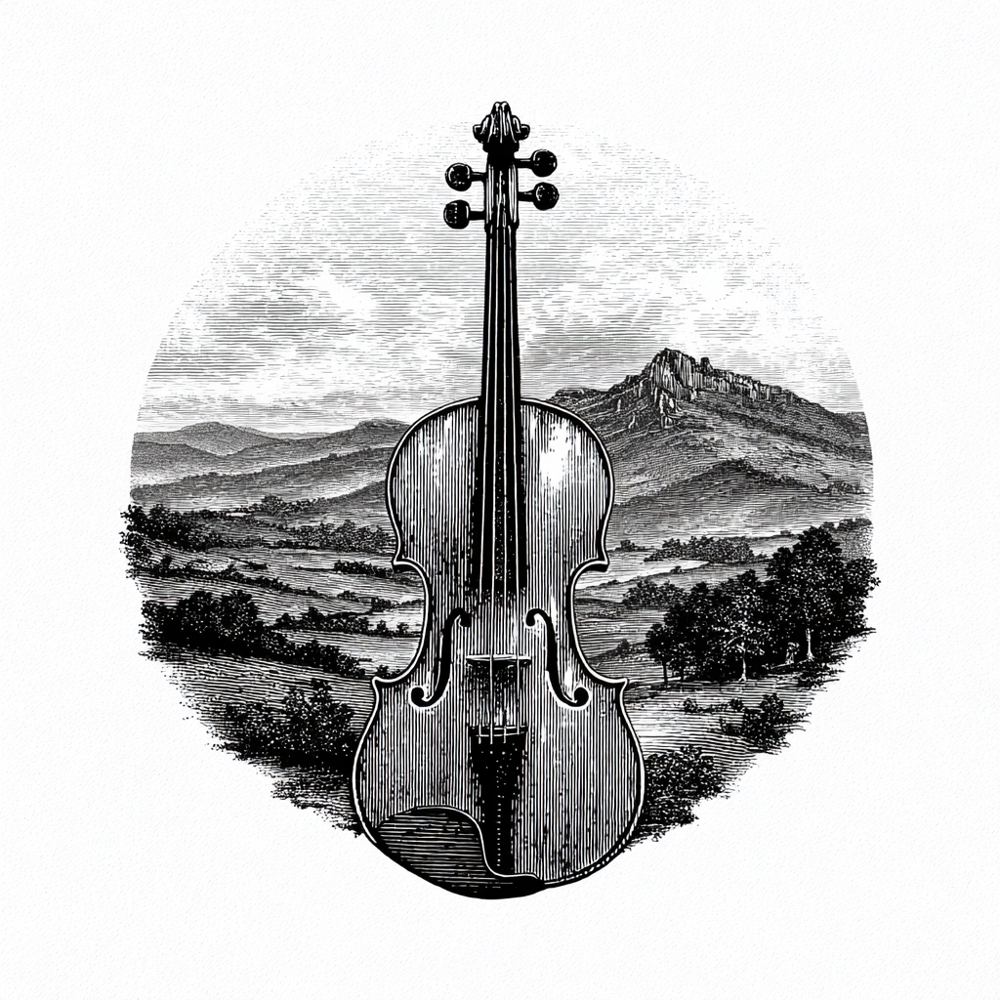
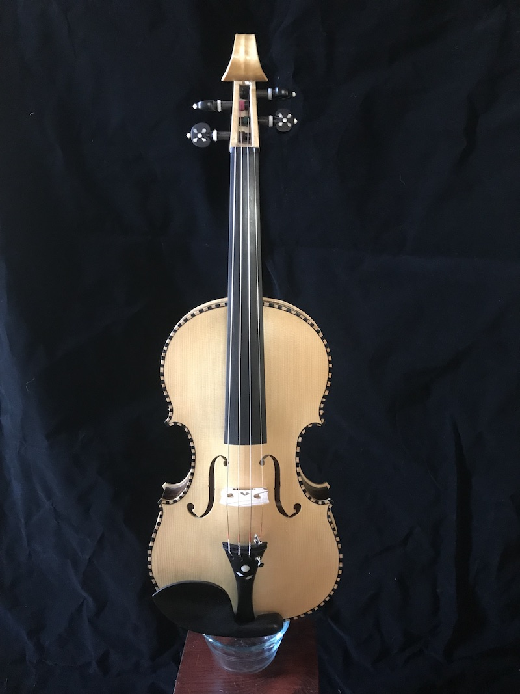
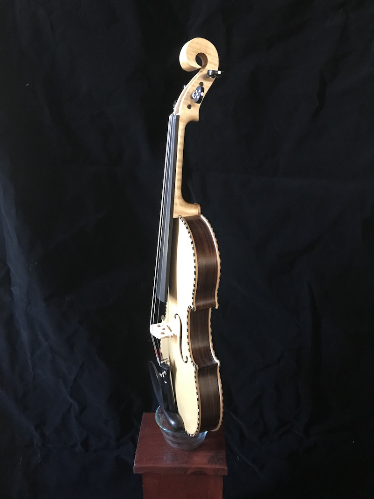
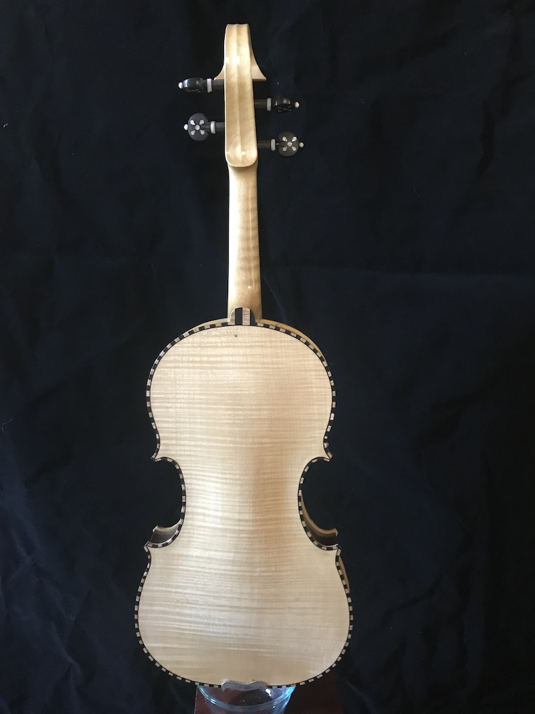
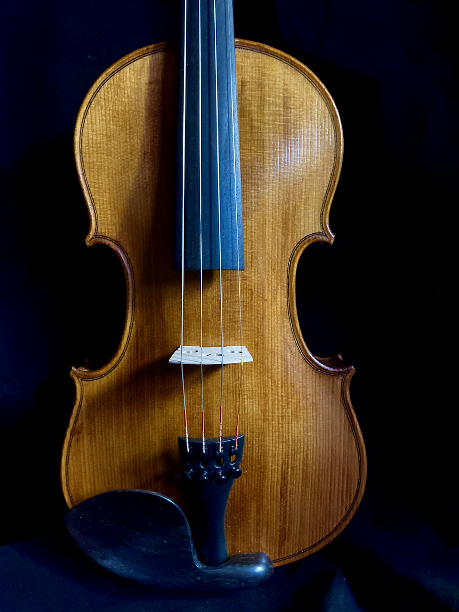
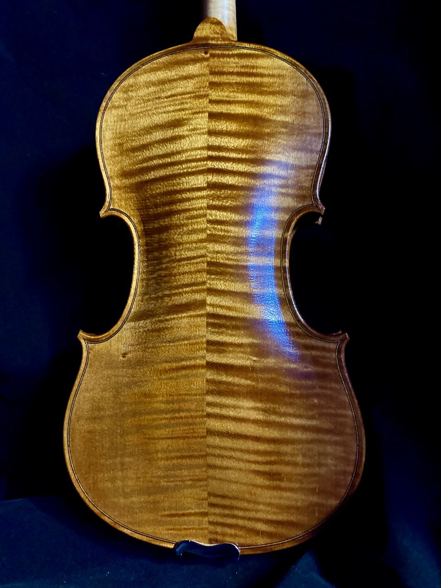
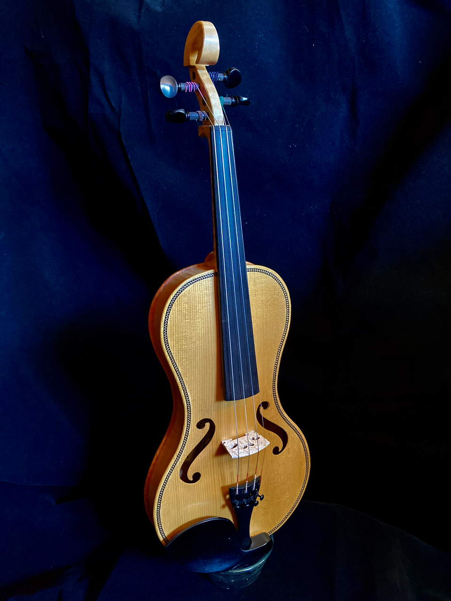
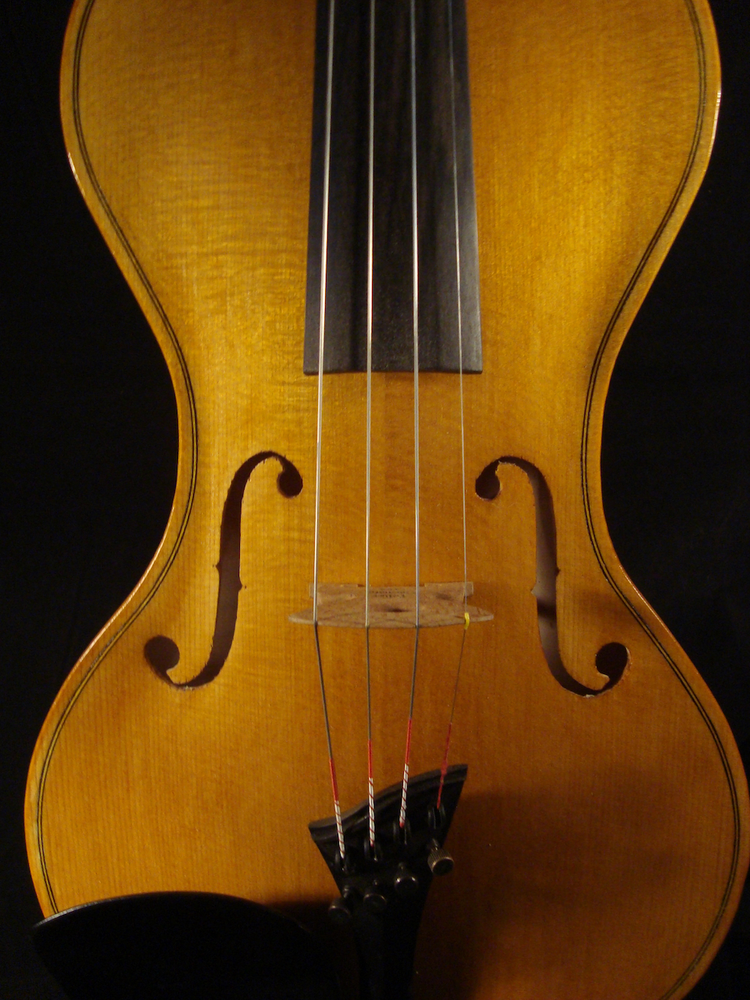
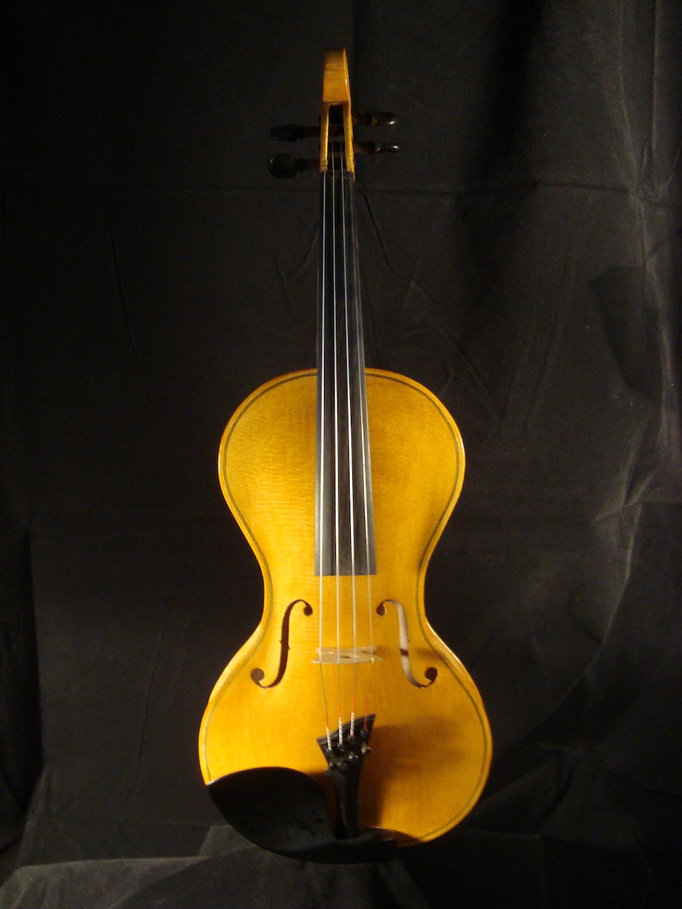

Handcrafted · Rhode Island
Hello, my name is Lutz Hamel and I have been building and repairing musical instruments for the better part of two decades.
In my builds I only use local, North American woods that have been sustainably harvested or reclaimed. For tops I usually use either Engleman spruce or Western redwood. For sides and backs I typically use highly flamed maple or black walnut. One of my favorite combinations is a Western redwood top paired with a black walnut back. The resulting instrument has a sweet, mellow sound. My necks are usually carved from maple. The one exception is the fingerboard. I still tend to use the traditional ebony (responsibly sourced) but I am experimenting with other woods like rock maple and American persimmon.
My instruments are inspired by various folk traditions. The Celtic/nordic and Appalachian traditions tend to be my main influences.
Work



The first three images show a Nordic inspired fiddle with ebony and maple inlaid binding
Next is a traditional constructed violin but executed as an electric fiddle (no f-holes!)
Following that is a Martin Guitars inspired violin complete with Herringbone binding and backwards f-holes.
The remaining two images are of a cornerless fiddle using traditional woods.





Get in Touch
Each instrument is made to order. I welcome inquiries about commissions, repairs, and collaborations. I tend to monitor my email closely so you should expect a response fairly quickly.